<!doctype html><html lang="ja"><meta charset="utf-8"><meta name="viewport" content="width=device-width,initial-scale=1"><title>PULBASE — 丸いPと面取りP</title><style>*{box-sizing:border-box}body{margin:0;background:#eaeae6;font-family:system-ui,sans-serif;color:#222}main{max-width:1240px;margin:auto;padding:28px}h1{font-size:25px;margin:0 0 10px}p{font-size:14px;color:#555;line-height:1.7;margin:0 0 22px}.grid{display:grid;grid-template-columns:minmax(0,1fr) minmax(0,1fr);gap:20px}section{background:#090b18;color:white;padding:24px;border-radius:12px;min-width:0}h2{font-size:17px;margin:0 0 22px}.profile{width:224px;height:224px;border-radius:50%;background:#090b18;border:1px solid #35394a;margin:auto;display:grid;place-items:center}.profile img{width:176px;height:176px}.favicons{display:flex;gap:12px;align-items:center;justify-content:center;margin:28px 0}.favicons span{font-size:12px;color:#aab4d6;margin-right:12px}.line{border-top:1px solid #303342;padding-top:26px}.line img{width:100%;display:block}.small{margin-top:24px}.small img{width:280px;max-width:100%;display:block}footer{font-size:13px;color:#555;line-height:1.8;margin-top:20px}@media(max-width:700px){.grid{grid-template-columns:minmax(0,1fr)}main{padding:16px}}</style><main><h1>PULBASE — 丸いP ／ 面取りしたP</h1><p>外側の輪郭だけを変更。内側の丸い抜き・稲妻・配色は同じ。各列に丸いプロフィール表示、実寸favicon、文字ロゴの大・小を並べました。</p><div class="grid"><section><h2>現行 / 丸いP</h2><div class="profile"></div><div class="favicons"><span>16px</span><span>32px</span></div><div class="line"></div><div class="small"></div></section><section><h2>比較案 / 面取りしたP</h2><div class="profile"></div><div class="favicons"><span>16px</span><span>32px</span></div><div class="line"></div><div class="small"></div></section></div><footer>文字ロゴは両案とも「同じシンボルを頭文字として使う」構成に統一し、外形の違いを比較。ULBASEの形・字間・位置は共通です。<br>サイトで現在使っている「Chakra PetchのP＋稲妻」とは異なる比較用文字ロゴ。採用データとサイトは変更していません。</footer></main></html>